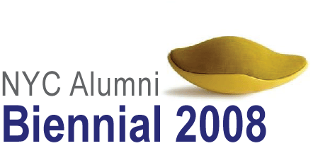

< CURRENT > < PROJECTS : PLACES : PRODUCTS > < PROFILE : CONTACT >
Rhode Island School of Design + XØ Projects present

.
.jpg)
.jpg)
.jpg)
.jpg)
.jpg)

.jpg)


.jpg)
.jpg)

.jpg)
.jpg)
.jpg)
.jpg)
.jpg)
.jpg)
.jpg)

.jpg)
.jpg)
.jpg)

.jpg)
.jpg)
.jpg)
.jpg)
.jpg)
.jpg)
.jpg)
.jpg)
.jpg)
.jpg)

.jpg)


.jpg)

.jpg)
.jpg)
.jpg)
.
An exhibition featuring works by 55 alumni artists and designers living in the NYC region representing 15 majors spanning four decades. Works selected by artists/curators Glenn Ligon + Lisa Sigal and arranged by Erica Cooke + Jessica Fain.
.
Lindsey Adelman + Carey Ascenzo + Eve Ashcraft + Ivin Ballen + Jeff Barnett-Winsby + Myles Bennett + Megan Biddle + Sam Bittman + Steven Bradford + Noah Breuer + Veronica Byun + Meghan Calhoun + Neil Cohen + David Collins + Katie Commodore + William Covintree + Rachel Deutsch + Lisa di Donato + Stephanie Diamond + Carol Dragon + Jeffrey Dresher + Brad Ewing + Adam Frank + Barbara Friedman + Fiona Gardner + Charles Gibson + Max Gleason + Jacob Goble + Meghan Gordon + Joe Graham-Felsen + Rosma Gutierrez + Steven Haardt + Richard W. Haining Jr + William Hilgendorf + Jason Horvath + Misha Jenkins + Fitzhugh Karol + Labour (Wyeth Hansen) + Adella Ladjevardi + Jerome Lagarrigue + Miranda Maher + L. Mylott Manning + Ezra Masch + Daniel Michalik + Kristine Morich + Ellen Moses + Larissa Nowicki + Colin Oulighan + Garima Panika + Sujin Park + Rebeca Raney + Lee Savage + Leigh Tarentino + Phil Whitman + Audra Wolowiec. To contact an artist, please write to Steve Whitten at < SWHITTEN@RISD.EDU >
. . .
OPENING RECEPTION
7 September 2008 Sunday 3-6 pm
Artists, alumni and their guests and the NYC art & design community are invited.
.
EXHIBITION DATES + HOURS
11 - 28 September 2008 Th-Fr 5-8 pm, Sa 12-8 pm, Su 12-6 pm
And, by appointment
>> Download Press Release < RISD P/R >
.
PROGRAMS + EVENTS
13 + 20 September 2008 Saturdays beginning at 2 pm
Related programs include: gallery talks with Lisa Sigal + Glenn Ligon; studio visits with alumni Janine Antoni, Paul Ramirez-Jonas and Rad Mountain; studio visits with current RISD faculty; and, film/animation and music programs. Programs, dates and times are subject to change.
>> For details go to < PROGRAMS + EVENTS >
.
CLOSING RECEPTION
28 September 2008 Sunday 3-6 pm
Artists, alumni and their guests and the NYC art & design community are invited
. .
EXHIBITION + PROGRAMS VENUE
The Old American Can Factory
232 Third Street at Third Avenue Gowanus Brooklyn, NY 11215
>> Get Location + Direction Info < LOCATION + DIRECTIONS >
. . .
NOTES FROM THE ARTISTS + DESIGNERS
Please click on the last names above to get notes and information about each artist/designer.
. .
NOTES FROM GLENN LIGON + LISA SIGAL
To select work from such a diverse group of applicants is a challenge, but one that we found both stimulating and informative. Since we are both artists, we approached the process with the idea that we were selecting the work of our peers, rather than illustrating a rigid set of themes. It was important to us to reflect in our choices the ranges of mediums in which RISD alumni are working, and the heterogeneity of the painting, drawing, printmaking, installation and industrial design we chose reflects the breadth of intellectual enquiry that the school encourages.
-- Glenn Ligon's text-based paintings and prints have been exhibited nationally and internationally for the last fifteen years. Additional information at < REGENPROJECTS.COM >
-- Lisa Sigal’s practice lies at the intersection of painting, sculpture, installation and architecture. Additional information at < FREDERIEKATAYLORGALLERY.COM >
.
NOTES FROM ERICA COOKE + JESSICA FAIN
The art
works in the RISD 2008 Biennial attest to a wide range of creative sensibilities
that can be attributed to differences in age, academic concentrations, personal
experience and more. Artists and curators Glenn Ligon and Lisa Sigal skillfully
harnessed this diversity in the works they selected.
Our approach to uniting and organizing the works is minimalist, in hopes that viewers will be prompted towards making associations that are inspirational, but not essential, to observing the work. The various arrangements lean towards juxtaposing unlike mediums in order to explore how harmonious ideas can materialize into distinct forms. Associations can be simplistic, such as observing the dominant presence of the color blue or the repeated uses of wood in urban spaces. And other connections require deeper exploration, such as locating the tension between mass-produced and craft-based products. Furthermore, many works investigate space by questioning the validity of common terms like public, private, iconic and domestic.
Mostly, however, the exhibition invites the audience to make connections and build stories of their own: How could one narrate a map of the Nile with watercolors of homes, telephone poles and electrical wiring? Could images of a Shakespearean stage communicate with paintings of nude family members at a national tourist destination?
Similar to how RISD encourages cross pollination through interdisciplinary study, The Old American Can Factory weaves together a collaborative environment of artists and designers where the diversity of artistic production stimulates unexpected links between disciplines and fellow artists.
-- Erica Cooke, an independent curator, works in the Prints & Illustrated Books Department
at MoMA, and previously worked with
XØ
Projects at The (OA) Can Factory. She
recently
completed her curatorial fellowship in the Independent Study Program at the
Whitney Museum, and received an MA in Contemporary Art at University of
Manchester/Sotheby's Institute and a BA in English at Brown University in
Providence, Rhode Island.
-- Jessica Fain works for the New York City Design Commission, and prior to there, worked with XØ Projects at The (OA) Can Factory. She received a BA in Art History at the University of Pennsylvania. She was born and raised in Providence, Rhode Island, and as a child, took art classes at RISD.
. .
RHODE ISLAND SCHOOL OF DESIGN (RISD)
Rhode Island School of Design, founded in 1877, is located in Providence, RI. It has earned a worldwide reputation as the preeminent art and design college in the U.S. There are more than 4,000 alumni currently living and working in the New York metropolitan area, and 22,000 alumni worldwide. < RISD.EDU >
.
XØ PROJECTS INC + THE OLD AMERICAN CAN FACTORY
The Old American Can Factory, a six-building, 130,000 SF complex in Gowanus, Brooklyn, is a curated haven to more than 200 artists, designers, filmmakers and educators working in the creative industries. It was developed and is operated by XØ Projects, a company engaged in planning, architecture & industrial design; development & management of cultural & industrial facilities; and, collaboration & production of visual and performing arts projects. < XOPROJECTS.COM >
. .
ACKNOWLEDGEMENTS + THANKS
This exhibition is presented by RISD Career Services in collaboration with the NYC Alumni Club + XØ Projects, and produced by Steve Whitten, Director of RISD Career Services and Nathan Elbogen of XØ Projects.
.
RISD thanks the artists for sharing their work and participating in this exhibition. All catalog and web images courtesy of the artists who own their copyright.
.
RISD and XØ Projects thank: Glenn Ligon and Lisa Sigal for selecting the works; Erica Cooke and Jessica Fain for arranging the works; Kevin Jankowski, Alan Tracy, the staff of RISD Career Services, and the alumni leadership of the NY Alumni Club; Naomi McLeod of Plume and Abby Longero for installing the exhibition; Drew Henkel, Chrissy Fitzgerald, Danielle Kourtesis and Deanna Lawson for hosting the gallery; the RISD faculty and alumni at The (OA) Can Factory, Rooftop Films < ROOFTOPFILMS.COM > and Afrokinetic < AFROKINETIC.COM > for participating in the related programs; Swayspace < SWAYSPACE.COM > and Moey Inc < MOEYINC.COM > for general support; Wingspace Desgin < WINGSPACE.COM > for lighting the complex; LiteBrite Neon < LITEBRITENEON.COM > for the neon sign; Wendy Wheeler Smith and Schoolhouse Kitchen < SCHOOLHOUSEKITCHEN.COM > for catering the Opening Reception; and, Scotto's Wine Cellar for providing the wine.
.
XØ Projects is grateful for
the friendship of Gayle and Roger Mandle, former president of RISD, and their
daughter, Julia, who have been a part of the The (OA) Can Factory family for the
past 12 years, and a source of inspiration for this collaboration.
.
Exhibition catalog designed by Shani K. Parsons (RISD ’00 GD) < SKPARSONS.COM >
Documentation photography by Tasja Keetman < TASJAKEETMAN.COM >
Exhibition website designed and hosted by XØ Projects Inc.
. . .
<< TOP
..................................................................................
For additional information please write to <
MAIL@XOPROJECTS.COM >
Please note that formatting attributes, icons and images may be interpreted visually by your computer and monitor differently than intended.
© 2008:2009 XØ PROJECTS INC ALL RIGHTS RESERVED | 01 Jan 2009 10:59:17 -0500
.jpg)
.jpg)
.jpg)
.jpg)
.jpg)